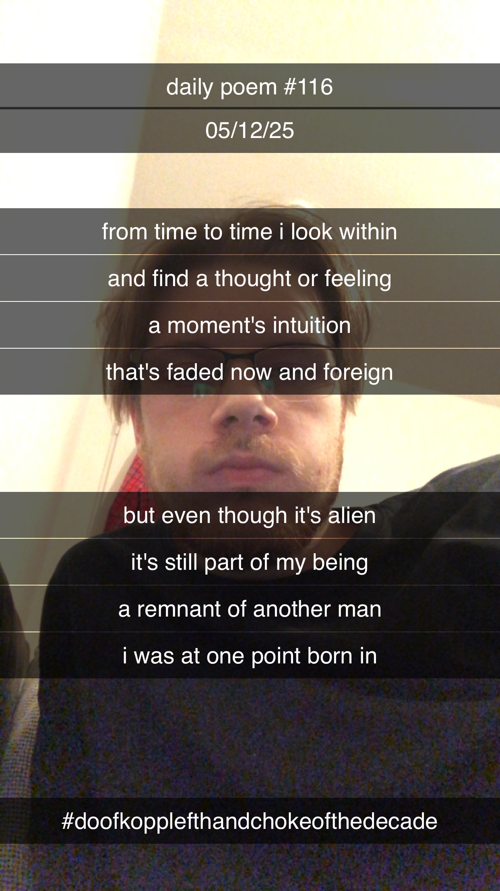

A Remnant of Another Man
[116]From time to time I look within
And find a thought or feeling –
A moment's intuition
That's faded now and foreign;
But even though it's alien
It's still part of my being –
A remnant of another man
I was at one point born in.
